The Molecular Interaction Bundle
About
The
Molecular Interaction bundle for IGB allows for mapping genomic regions to molecular interactions and structures.
The Bundle has been developed by Arnaud Ceol (arnaud.ceol@iit.it) at the
Center for Genomic Science of the
Istituto Italiano di Technologia in Milan (Italy).
More information about this bundle (including help page and tutorials) is available online at the address
http://cru.genomics.iit.it/igbmibundle.
Search
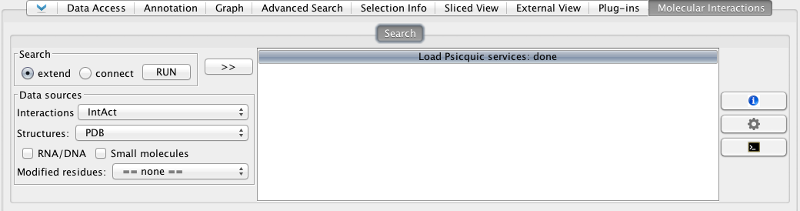
Search mode
- Extend: find interaction between the product of selected genes and any other molecules.
- Connect: find interactions between the product of selected genes only.
Data sources
- Interactions: choose an interaction database. The list of databases
is retrieved from the PSICQUIC registry (). Choose == none == if you are
only interested by interactions with structures.
- Structure:: PDB, Interactome3D or DSysMap. With PDB and Interactome3D
the contacts are calculated by the plugin. With DSysMap, contact at
mutated positions are imported. Choose == none == if you are
not interested in structures.
-
RNA/DNA and small molecules: check those boxes to include interactions
with molecules other than proteins.
- Modified residues: include modified residues (PTMs).
Extended search: press >>
When the search box is visible (press button
>> to show), the search
is done on the regions added to the box. When the search box is hidden,
(press button
<< to hide), the search
is done on the regions selected in the browser.
- Add: add selected regions to the list.
- Remove: remove selected region to the list.
- Clear: remove all regions from the list.
- Add track: add all regions from selected tracks.
- Search and add: perform a text search on all regions. All regions found
are added to the list.
Results
Result tab
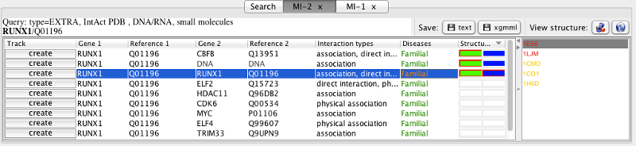
Buttons
- 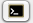Log: display the log for current query. If an error occurs, the
icon will be display over a red background.
- 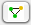Network: display the network as a graph.
- 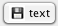Save (text format): save the results in a tab-delimited file.
- 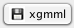Save (xgmml): save the results in the xgmml format, which may be
loaded in network visualization browsers like Cytoscape.
- 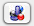Jmol: view selected structure in Jmol.
- 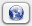Link: open the link to the original database in an external browser.
Result table
If you select any line on this table, the respective structures will be listed
in the structure table.
- Track: by default, the contacts found for all genomic regions
for current queries are merged in a single track. It is possible to press
this button to create a new track that displays only the contacts for the
specific interactions. This allow to compare the interface of a protein
with different partners.
- Gene: gene or molecule name. Double click on this cell to
zoom onto the region associated in the browser.
- Reference: for protein coding genes, its Uniprot Accession. Double
click on this cell to open the associated page of the Uniprot website
in an external browser. If the molecule is DNA, RNA or small molecule, its
formula or a label is displayed and the link forwards to PDB.
- Interaction type: the one extracted from the protein
interaction database. If the interaction is imported from PDB, it is set
automatically to association, or direct interactions if
imported from Interactome3D.
- Diseases: list of diseases associated to the proteins according
to Uniprot. The disease name is colored in greenif it is
associated to the first protein, in blue if
associated to the second protein, and orange if
common to both proteins.
- Structures: colored squares are displayed id a structure is
available for this interaction. Orange border
indicates that a selected residue is mapped on the protein,
red border shows that a selected residues is in contact with the
other molecule.
Network visualization:
| 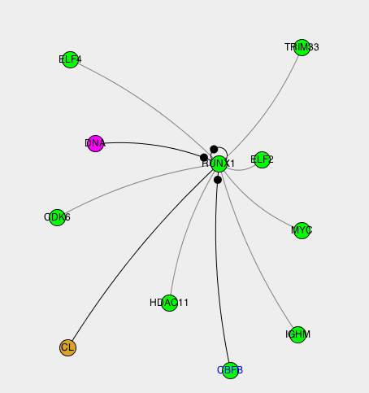 |
The interactions can be displayed in a graphical network. The type of molecule
is represented by its color. A small black circle on one side
of an edge indicates that contacts have been detected on this
side of the interaction.
|
Structure table
The names of the structures is displayed in
orange
if a residue selected is mapped on the structure,
red
it is in contact with the other molecule.
New tracks in the genome browser:
| 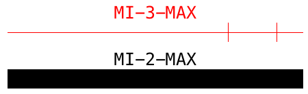 | New tracks are create for each result. The tracks displays either the genes
which products are involved in an interactions or the residues found at the
interface between a protein and another molecule.
The elements in the new track are represented as red horizontal lines with vertical
sticks at the positions that encode for residues at an interaction interface.
If no contact residues was found, a black vertical bar is displayed over the region
that encode a selected or interacting gene. |
The Jmol window
| 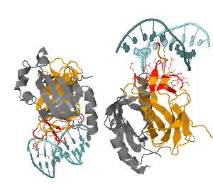 |
The structures can be displayed in a Jmol window. It is possible to access to all
the Jmol options and feature by right clicking on the window. The chains that
represent the first protein are colored in green, the chains that represent the
second protein in blue, and the other types of molecules (DNA, RNA, ligands) in
yellow. The selected residues are colored in red if they are in contact with the
other molecule, in orange otherwise. |
Configuration
| 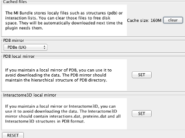 |
File cache
The MI Bundle stores localy files
such as structures (pdb) or interaction lists.
You can clear those files to free disk space. They will be
automatically downloaded next time the plugin needs them.
PDB local mirror
If you maintain a local mirror of PDB,
you can use it to avoid downloading the data.
The PDB mirror should maintain the hierarchical structure of
PDB directory.
Interactome3D local mirror
If you maintain a local mirror
or Interactome3D, you can use it to avoid downloading the data.
The Interactome3D mirror should contain
interactions.dat, proteins.dat and all Interactome3D
structures in PDB format.
|